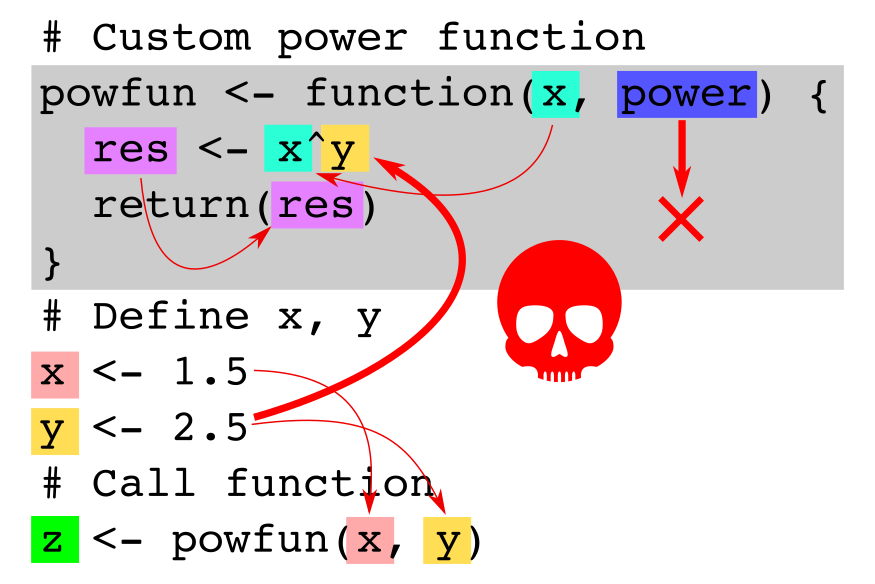

Chapter 7 Function Recap
Just a short repetition of writing functions in R. During the last practical session but also when going trough your submissions on Session 03 Exercise A-C I’ve seen a lot of functions using Rs so called “lexical scoping” feature. Even if this works it is “not recommended to use” (at least not for beginners as it might be confusing very quickly). The following two images show two R functions. The first one is the suggested way to write functions.

Explanation: The function is, again, the simple power function we have used several times. The function takes two inputs, namely x and power and returns x^power at the end. Outside the function we define a x and a y, call the function, and store the result (the return of the function) on z. Several things to mention here:
- Everything you use in the function should be explicitly defined as input to the function (here
xandpower). - The objects
xandpowerinside the function are only available inside the function (the gray box is kind of a “function container” or “box”). - The object
x(red) defined outside the function is not the same as the objectx(turquoise) inside the function! Don’t mix them up. The “red”xis defined in our workspace. We forward the value of the “red”xto the function as the first input argument. Inside the function the first input argument is also calledxbut is not the “red”x. This is a new object (thus, turquoise) and gets the same value as the “red”x. - The second element of the function (
power) is not defined in the workspace but gets the value ofyas we call the function withpowfun(x, y). The function inputs do not have to match the objects outside the function.

Explanation: This shows what we should not do. Scoping is a thing, but Try not to use it and try to understand what’s happening if you do. In this case the function is even wrong. What we wanted to do is to have a function which has two inputs and returns the first input (x) to the power of the second input (power). However, if you look closely we actually do something different.
- On our workspace we have two objects
xandy. We then (as in the example above) call our function withxandyas inputs. So far, so good. - The function now gets the input
xandpower(with the values from the two objects on our workspace), however the function returnsx^yinstead ofx^power! Why does it still work? Scoping! - We are using an object
yinside the function, which has never explicitly been defined as an input to the function. R now tries to findyand will find one defined on in our workspace (the “orange” one) and uses this one. Thus, the function works and - in this case - returns the correct result, but due to the wrong reason!. - The
powerinput is never used at all. - Try to imagine what will happen if you now call
function(2, 2). Instead of returning4(2^2) the result onzwill be5.6568as the function returns2^y = 2^2.6 = 5.6568.
Thus, always (always) define all variables you use inside functions as explicit input arguments. And check your functions such that you only use objects you specified as input arguments!